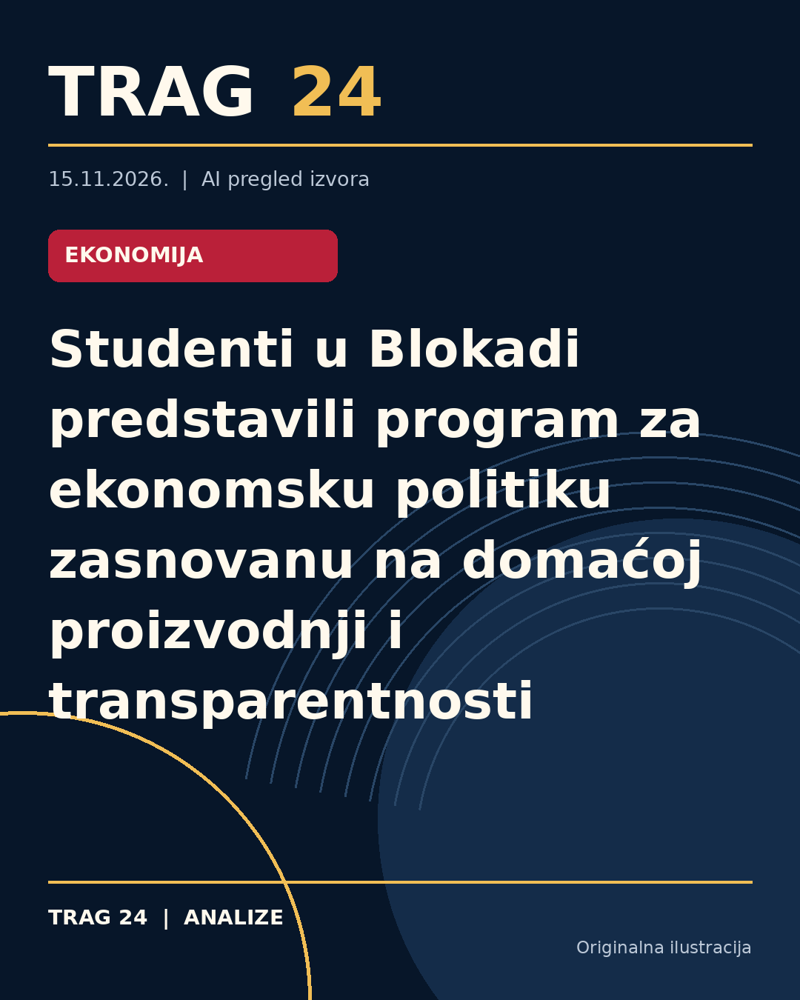

Studenti u Blokadi predstavili program za ekonomsku politiku zasnovanu na domaćoj proizvodnji i transparentnosti

ŠTA SE DOGODILO
Grupe 'Studenti u blokadi', koje su na izborima 25. oktobra podržale Studentsku listu, javno su izneli svoj program 'Privreda i finansije'. U njemu ističu potrebu reforme ekonomske politike sa fokusom na razvoj domaće proizvodnje, inovacija i stabilnih radnih mesta, kao i transparentnosti u korišćenju javnog novca.
HRONOLOGIJA
Nakon izbora održanih 25. oktobra, studenti su na društvenoj mreži 'Iks' objavili svoj program usmeren na ekonomske reforme. Oni su naglasili probleme sadašnjeg modela zasnovanog na jeftinoj radnoj snazi i najavili mere za pravedniji poreski sistem i transparentnije upravljanje državnim sredstvima. Program uključuje konkretne predloge za reformu poreske politike, javnih nabavki, upravljanja strateškim preduzećima i kursa dinara.
ŠTA NAVODE IZVORI
Izvori iz dva nezavisna medija, Insajder i Danas, navode identične informacije koje potiču od samih studenata u blokadi. Studenti poručuju da neće biti rasprodaje strateških preduzeća, da će biti uvedene javne crne liste za nepoštene ponuđače, kao i da će projekti u budućnosti biti ugovarani prema opštem pravilu, bez posebnim zakona (lex specialis). Planirana je i veća transparentnost ugovora i podsticaji za firme koje povećaju prosek plata.
ŠTA JE POTVRĐENO
Potvrđeno je da studenti u blokadi zagovaraju pravedniji poreski sistem sa progresivnim oporezivanjem, ukidanje godišnjeg poreza u korist mesečnog i podizanje neoporezivog dela zarade. Takođe, planiraju uvođenje dinarskih štednih obveznica te da će se vrednost dinara održavati stabilnom, uz izbegavanje devalvacija koje bi mogle povećati inflaciju i narušiti štednju građana. Strategija državnog vlasništva biće u nadležnosti Narodne skupštine, a ne samo Vlade, dok će se direktori državnih preduzeća birati sa javnih lista stručnjaka.
ŠTA NIJE POTVRĐENO
Iz dostupnih tekstova nije precizirano kako će biti implementirane konkretne mere i koji su rokovi za sprovođenje programa. Nema podataka o reakcijama drugih subjekata vlasti na ove predloge. Takođe, informacije o finansiranju i detaljnim mehanizmima kontrole nisu detaljno razjašnjene u dostavljenim izvorima.
ŠTA OSTАJE OTVORENO: Ostaje nejasno kako će se novinarima i javnosti pružiti mogućnost da prate sprovođenje ovih reformi i da li će doći do stvarnih zakonskih promena u skladu s najavama studenata. Takođe, nije poznato kako će se odnos prema međunarodnim sporazumima razvijati u praksi i kakva će biti reakcija drugih političkih činilaca na ove inicijative. Neizvesno je i da li će predlozi vezani za javne nabavke i kapitalne projekte uspeti da spreče ranije zabeležene zloupotrebe.
Izvori
- https://insajder.net/prenosimo/studenti-u-blokadi-ekonomska-politika-da-podstice-domacu-proizvodnju-a-ne-da-nagraduje-privilegovane
- https://www.danas.rs/vesti/ekonomija/studenti-ekonomska-politika-da-podstice-domacu-proizvodnju-a-da-ne-nagradjjuje-privilegovane/
Ova analiza je pripremljena uz pomoć veštačke inteligencije na osnovu javno dostupnih izvora. Navodi izvora nisu nužno nezavisno potvrđeni.